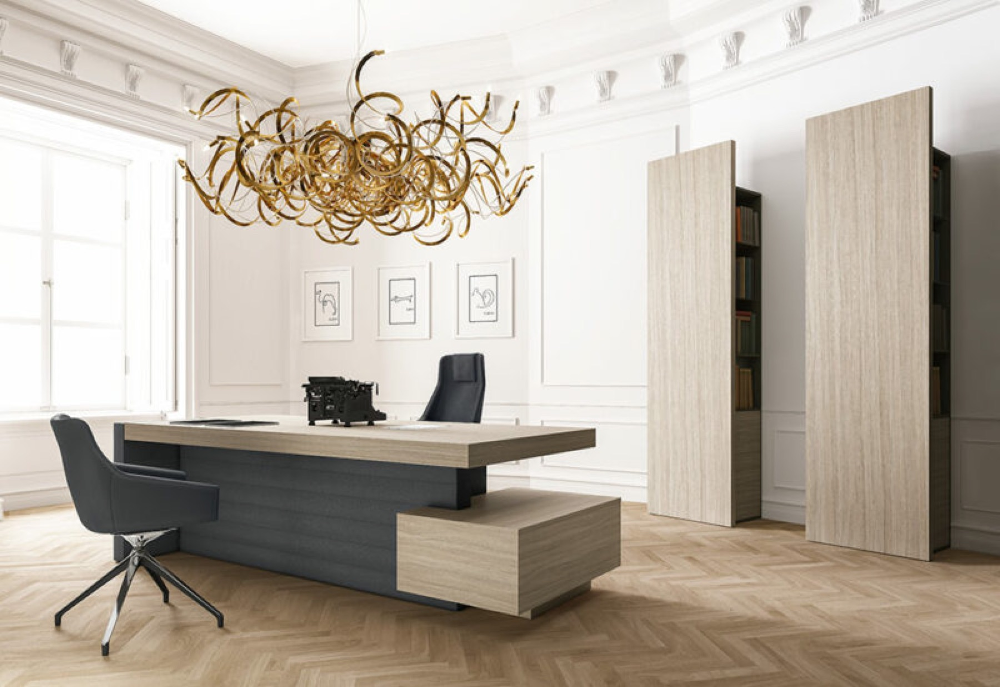
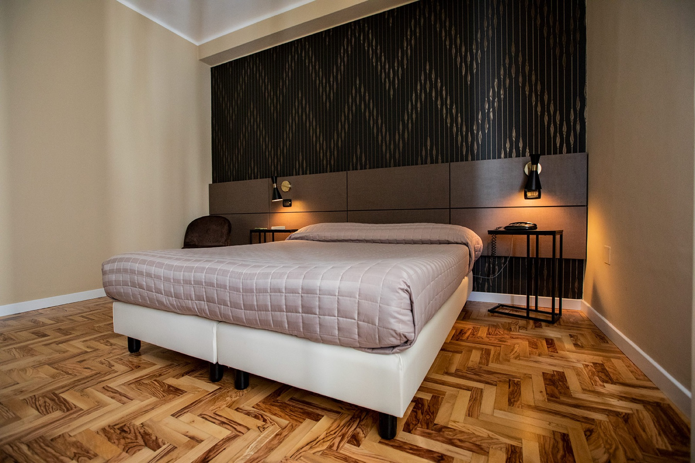

Il vostro disegno,
la nostra officina.
Per architetti e studi che hanno già una commessa per un proprio cliente. Lo studio firma il progetto, Artes lo rende costruibile: verifichiamo la fattibilità, ingegnerizziamo il dettaglio, campioniamo i materiali e realizziamo l'arredo finito, senza riscrivere il disegno e senza scavalcare lo studio con la committenza.

Dal concept
al pezzo in cantiere.
Entriamo nel progetto quando serve: dalla prima verifica di un dettaglio alla produzione completa di un cantiere. Ogni servizio si può chiedere anche da solo.
Il progetto
resta vostro.
Lavoriamo come officina dello studio, non come alternativa. Le regole sono semplici e valgono per ogni commessa.
- Il rapporto con la committenza resta dello studio
- Nessuna variante al disegno senza l'approvazione del progettista
- Riservatezza sui progetti, anche prima dell'incarico
- Un referente tecnico dedicato allo studio, sempre lo stesso
- Il nome dello studio accompagna il progetto nelle nostre realizzazioni

Materiale
per chi progetta.
Quello che serve per valutare Artes come partner di realizzazione: cosa produciamo, i marchi che coordiniamo e i cantieri già consegnati. Schede tecniche e file dei prodotti si richiedono al referente tecnico.
- Referente
- Un tecnico dedicato allo studio per tutte le commesse
- Fattibilità
- Prima risposta tecnica entro 5 giorni lavorativi
- Preventivo
- Su capitolato, con voci separate e varianti di materiale
- Campionature
- Fisiche, spedite allo studio o presentate in showroom
- Formati
- DWG, DXF, PDF, modelli 3D su richiesta
- Copertura
- Calabria e tutto il territorio nazionale
Hotel, uffici e locali costruiti sul disegno di studi di progettazione: la scheda di ogni realizzazione riporta il progettista.